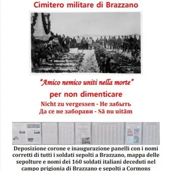

mar 3 nov · dalle 11:00
"Amico nemico uniti nella morte" per non dimenticare
Anche quest’anno, martedì 3 novembre alle ore 11.00, al cimitero militare di Brazzano, La Società Cormonese Austria e il Comune di Cormons porteranno una corona, con nastri dei colori delle bandiere di cinque nazionalità, per ricordare i 540 soldati lì sepolti. Verranno anche…
 Indicazioni
Indicazioni
- Costi e prenotazioni
- Costo non indicato · Prenotazione non indicata
- Programma
- Programma da verificare. Apri la fonte ufficiale per orari e possibili aggiornamenti.
- In caso di maltempo
- Nessuna indicazione specifica pubblicata.
- Note
- Acquisito automaticamente dalla fonte.
L’EVENTO
Descrizione completa
Anche quest’anno, martedì 3 novembre alle ore 11.00, al cimitero militare di Brazzano, La Società Cormonese Austria e il Comune di Cormons porteranno una corona, con nastri dei colori delle bandiere di cinque nazionalità, per ricordare i 540 soldati lì sepolti.
Verranno anche inaugurati i pannelli, collocati all’esterno del muro di cinta, per completare l’elenco dei nomi dei soldati che riposano nel cimitero militare di Brazzano e dei 160 soldati italiani morti nel campo di prigionia di Brazzano. I nomi storpiati dei soldati austro ungarici sono stati corretti, e di questo dobbiamo ringraziare l'ing. Milos Krybus di Olomuc, Repubblica Ceca, che venuto a Brazzano e non trovando il nome dello zio in quanto storpiato, in due anni di ricerche è riuscito a correggerli tutti.
IL PROGRAMMA
Programma e orari
Appuntamenti raccolti dalle fonti elencate. Dove manca un orario, non è ancora disponibile in questa scheda.
Programma pubblicato
- Dal 2026-11-03 al 2026-11-03
INFORMAZIONI UTILI
Prima di partire
- Controllare la fonte prima di partire.
ORGANIZZAZIONE